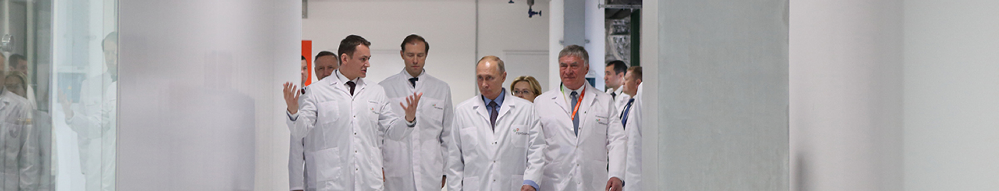

Герофарм — ведущий российский производитель биотехнологических препаратов. Компания является лидером в области диабетологии, занимается выпуском препаратов для лечения сахарного диабета по принципу полного цикла и медицинских изделий.
С 2001 года на
фармацевтическом рынке
С конца 2016 года лидер на рынке
генно-инженерных инсулинов человека
Больше 10 млрд. рублей объем инвестиций в
технологические инновации и НИОКР в 2010-19 гг.
Более 10 препаратов
в портфеле
Более 20 препаратов
в разработке
1000+ высококвалифицированных
сотрудников
ГЕРОФАРМ – комплексные решения
в сахарном диабете
Сахарный диабет – эпидемия 21 века. Ежегодно фиксируется рост заболеваемости во всем мире, в том числе в России.
ГЕРОФАРМ развивает комплексный подход к обеспечению потребностей пациентов, занимаясь разработкой и производством:
- генно-инженерных инсулинов
- аналоговых инсулинов
- пероральных противодиабетических препаратов
- средств самоконтроля глюкозы в крови
Приоритетные направления:
Разработка и производство лекарственных препаратов для лечения социально значимых заболеваний по принципу полного цикла
Реализация задач по импортозамещению в рамках государственных программ
Инвестиции в технологическое развитие и создание современной фармацевтической инфраструктуры
Лидерство в диабетологии
Каналы поставок:
1 Государственные закупки
2 Аптечный сегмент
Конкурентные преимущества:
- Инвестиции в современные технологические процессы производства тест-полосок
- Бесплатное обучение специалистов по использованию систем самоконтроля SelfyCheck
- Проведение образовательных мероприятий для врачей – эндокринологов с привлечением ведущих специалистов в области самоконтроля
- Предоставление бесплатного программного обеспечения для пациентов и специалистов
- Оказание сервисной поддержки оборудования SelfyCheck (сервисные центры, горячая линия помощи)
- Поддержка социально значимых проектов для пациентов в рамках образовательных программ
ГЕРОФАРМ - партнер государства

ГЕРОФАРМ – является надежным партнером государства и в рамках программы импортозамещения реализует проекты, направленные на обеспечение российских пациентов с сахарным диабетом качественными препаратами и системами самоконтроля.
Отзывы
У каждого своя история заболевания сахарным диабетом, но я не хочу сильно углубляться и напишу коротко основные пункты из моей: резкий набор массы тела - за 3 недели 15 кг (я не жила по принципу ПП, но и не ела фастфуды и вредную пищу ежедневно);
У каждого своя история заболевания сахарным диабетом, но я не хочу сильно углубляться и напишу коротко основные пункты из моей: резкий набор массы тела - за 3 недели 15 кг (я не жила по принципу ПП, но и не ела фастфуды и вредную пищу ежедневно);
У каждого своя история заболевания сахарным диабетом, но я не хочу сильно углубляться и напишу коротко основные пункты из моей: резкий набор массы тела - за 3 недели 15 кг (я не жила по принципу ПП, но и не ела фастфуды и вредную пищу ежедневно);
У каждого своя история заболевания сахарным диабетом, но я не хочу сильно углубляться и напишу коротко основные пункты из моей: резкий набор массы тела - за 3 недели 15 кг (я не жила по принципу ПП, но и не ела фастфуды и вредную пищу ежедневно);
У каждого своя история заболевания сахарным диабетом, но я не хочу сильно углубляться и напишу коротко основные пункты из моей: резкий набор массы тела - за 3 недели 15 кг (я не жила по принципу ПП, но и не ела фастфуды и вредную пищу ежедневно);
У каждого своя история заболевания сахарным диабетом, но я не хочу сильно углубляться и напишу коротко основные пункты из моей: резкий набор массы тела - за 3 недели 15 кг (я не жила по принципу ПП, но и не ела фастфуды и вредную пищу ежедневно);